Salesforce Financial Services for Slack
Enabling collaboration, connecting systems, and automating processes.
Scroll Down
Overview
Financial Services is an industry that has many stakeholders with lengthy and complex deal lifecycles. Slack for Investment Banking gives customers easy access to their Salesforce data, makes it easy to collaborate with team members, and provides industry insights that help teams stay on top of their deals.
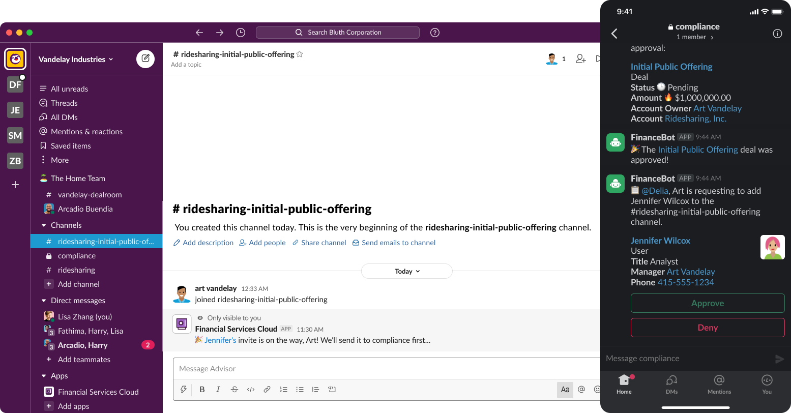The Problem
Investment Banking deal teams are complex and must comply with regulatory requirements that can cause timelines to slow and carry harsh penalties if done incorrectly. In addition, disparate systems act as barriers to collaboration, slowing progress further.
Constraints
The initial project went from 0 to 100. Our team had no dedicated researcher, so I led what we were able to accomplish. We couldn’t show any designs or prototypes or even talk about Slack to customers. These constraints forced us to abstract our questions into general behavior around collaboration. When we could start building, there were overwhelming dependencies on our Platform team, so our team had to create our components.
Design Kickoff
Slack was one of the most anticipated projects at Salesforce, with almost everyone on the team asking to get involved. We kicked off the effort with a cross-functional, international remote design studio using Figma to get the whole team involved. Our participants included product managers, designers, researchers, and engineers in the US and India.
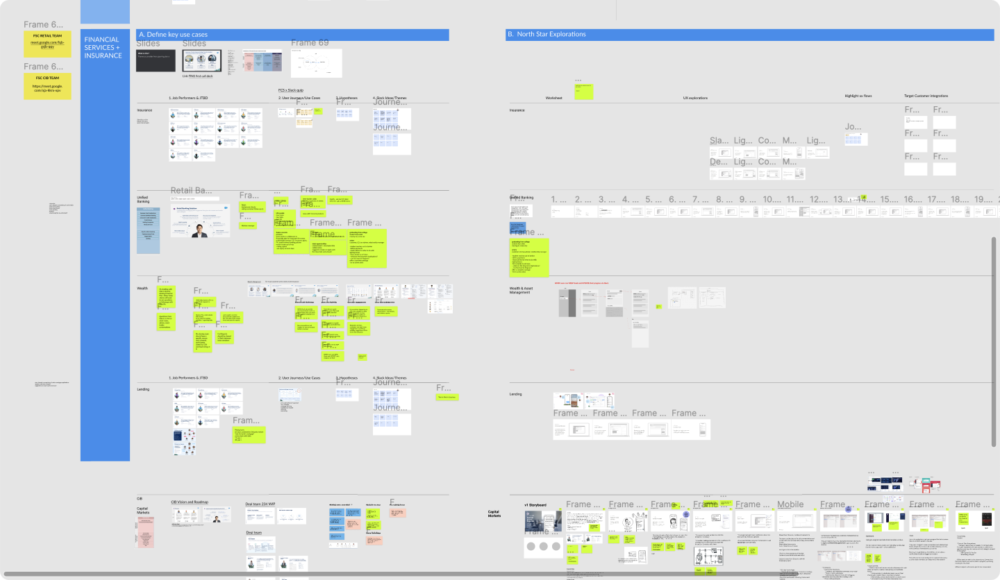Jobs to be Done
When the team decided on our use cases, we started with what we knew about the job performers involved and their jobs to be done. We started storyboarding a flow that would showcase our products’ diversity and how Slack could influence all of them.
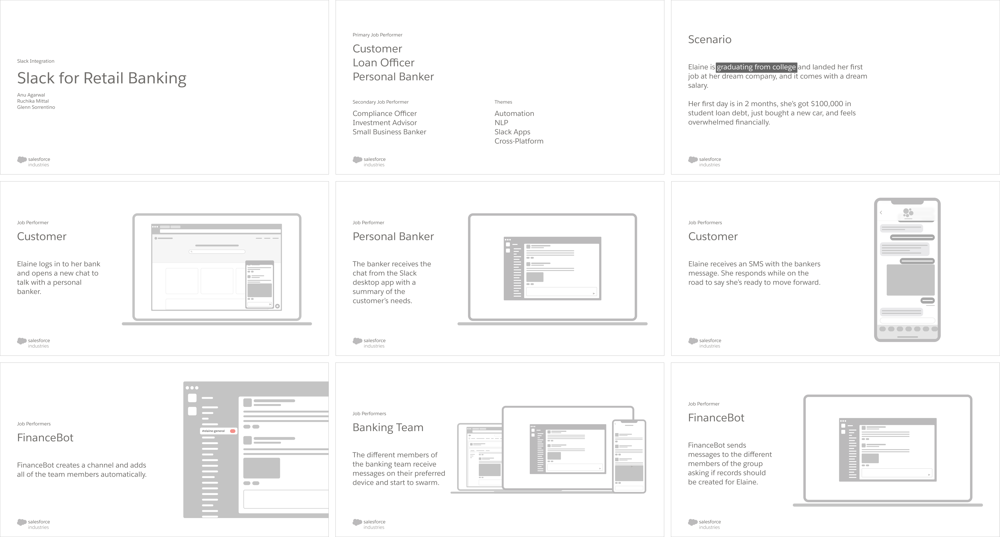Telling The Story
About a week after the kickoff workshop, teams presented to our company executive leadership. We focused on Investment Banking and created a story about how Slack could help deal teams work better. A problem bankers face is information being spread across multiple systems, not taking advantage of automation and substantial regulatory finds from incorrect filings. We explored concepts around taking voice notes, automation embedded into workflows, compliance steps, and using Slack as a hub for all your federated data.
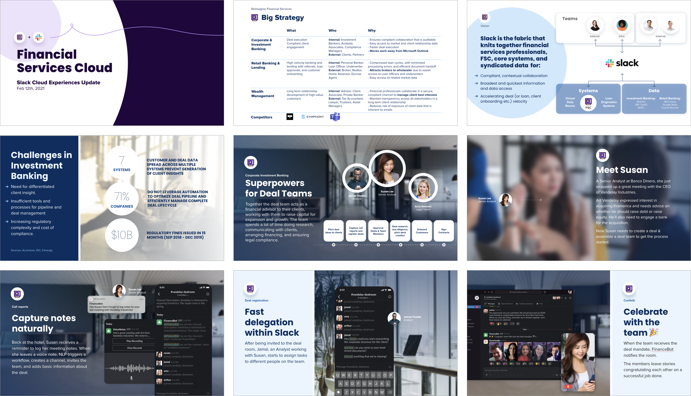Research
Messaging was a new problem space for many people at the company, so we first learned as much as possible about Slack and how our customers consumed messaging apps. The acquisition closed in July, but the work kicked off in February. The timing introduced unique challenges: we weren’t allowed to talk to customers about Slack and couldn’t show any design concepts for what we were thinking. So instead, we created a set of interview questions that surrounded team collaboration and working style. Our goals were to understand how our customer’s teams collaborated today, what they liked about their current platforms, and what could be improved. Then, following every few rounds of interviews, we’d refine the designs further.
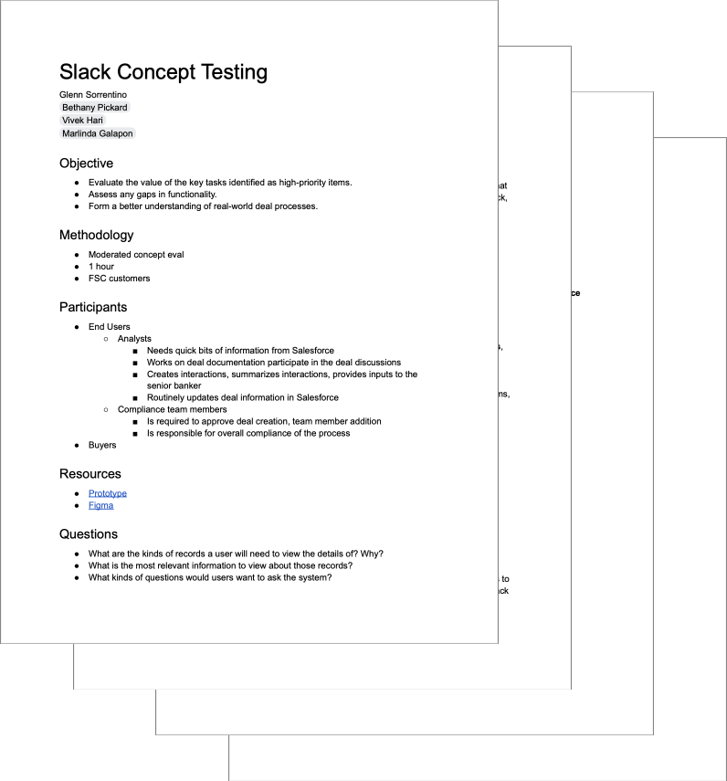New Technology
Before the acquisition closed, we couldn’t communicate with the Slack UX team and had to start from scratch. Slack has its Block Kit Builder, allowing users to play with the available components, or blocks, in a demo environment.
I started modeling our use cases in the builder to learn the system and used the output as my guide when creating Figma components. The JSON the builder provided was a key part of the design spec and was used as a guide for our engineering team.
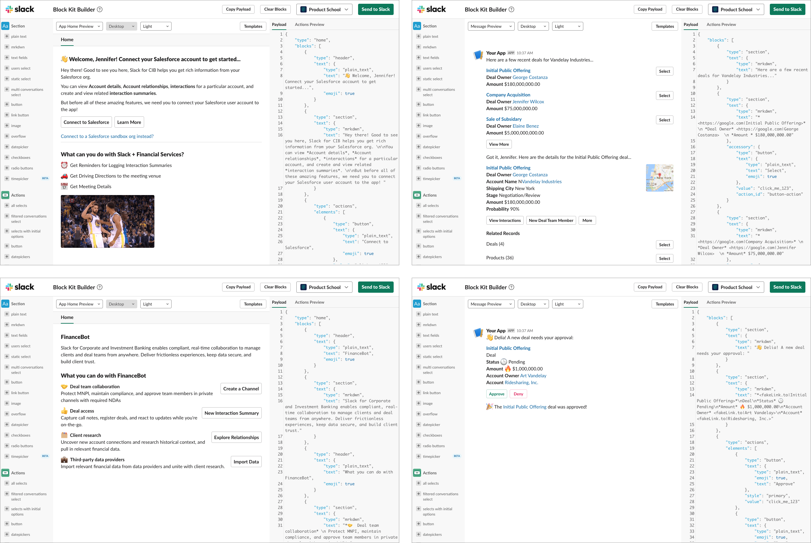Conversational Design
One recent project was the Einstein Voice Assistant, a conversational way to create, read, and update your data in Salesforce. We used sample dialogs to design the conversational experience, and I brought that practice to the Slack effort.
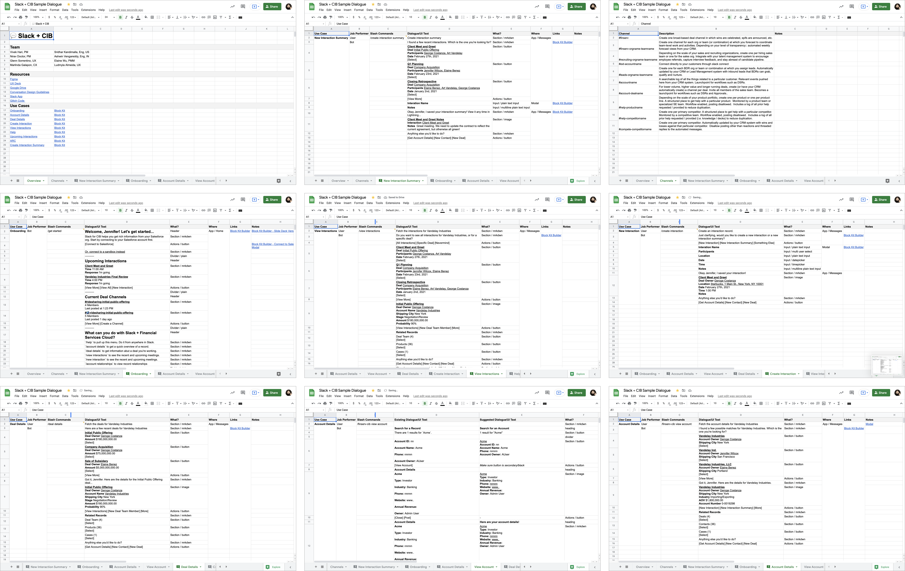The information documented included the job performer, the slash command to instantiate the flow, the dialogue, the type of block kit component, where the interaction happened, and links to the Block Kit JSON from the builder.
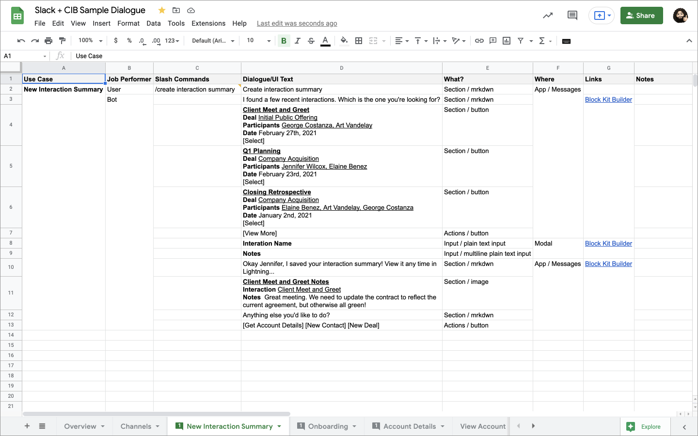Prototyping
With the spreadsheet as our source of truth, and the Block Kit JSON showing us the expected interface, I translated the UI into Figma. Next, I built a prototype that demonstrated its interactivity. Finally, I embedded animated GIFs of the prototype into the design specifications for their respective flows.
 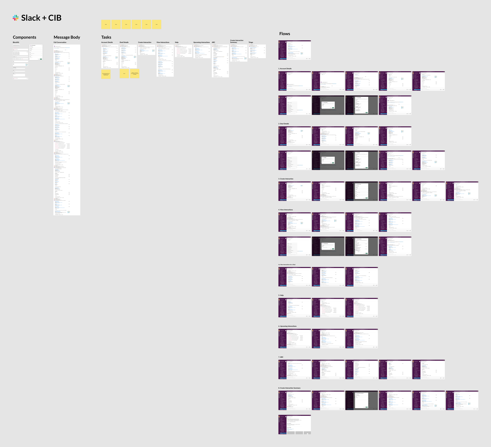
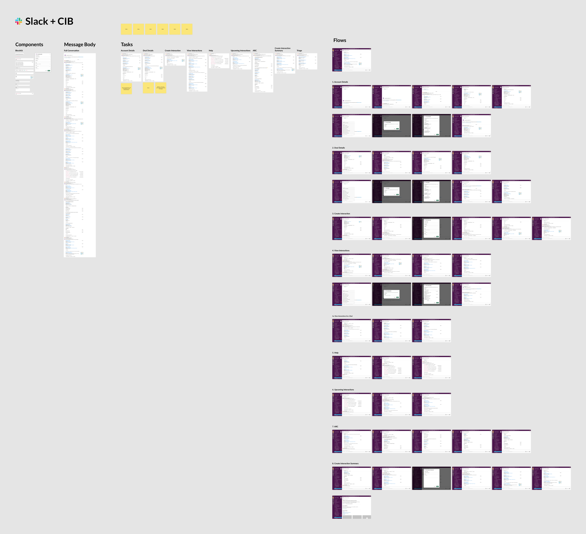
Design Spec
With the sample dialogue complete, the conversations modeled in the Block Kit Builder, and prototypes in place, I created a design spec that collated all of the information for our product and engineering teams. It included CX principles, information about the users we were solving for, demos, and detailed interaction specs.
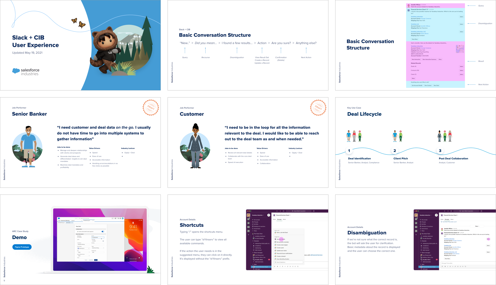🚀 Ship It!
When we were ready to ship the product, I worked with our product marketing team to create the assets we needed for the Slack App Directory.
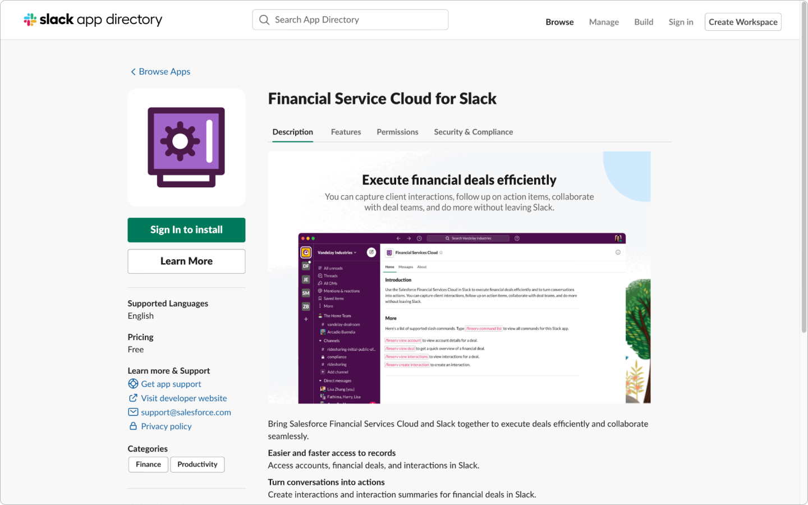In Conclusion
Successes
- ✅ Fast team response time
- 🤝 Lean, collaborative team
- 👍 Adapted to constraints successfully
- 🕦 Drawing from past experience
- 🙌 Called the most interesting set of use cases by Slack
Lessons
- 🧠 Lean research methods can work at scale
- 📄 Spreadsheets are a bridge to collaboration
- ❤️ Demos that make the audience smile are memorable
- 💪 Roles and responibilities enables quick response
- 🔥 Constraints are a good thing, actually